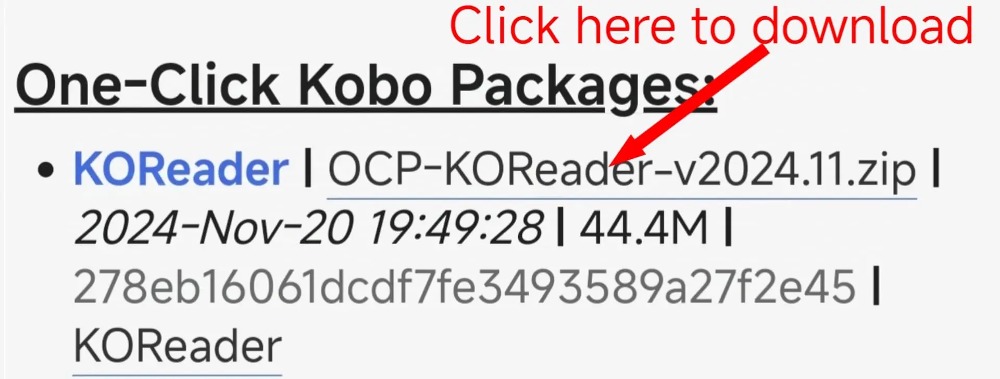
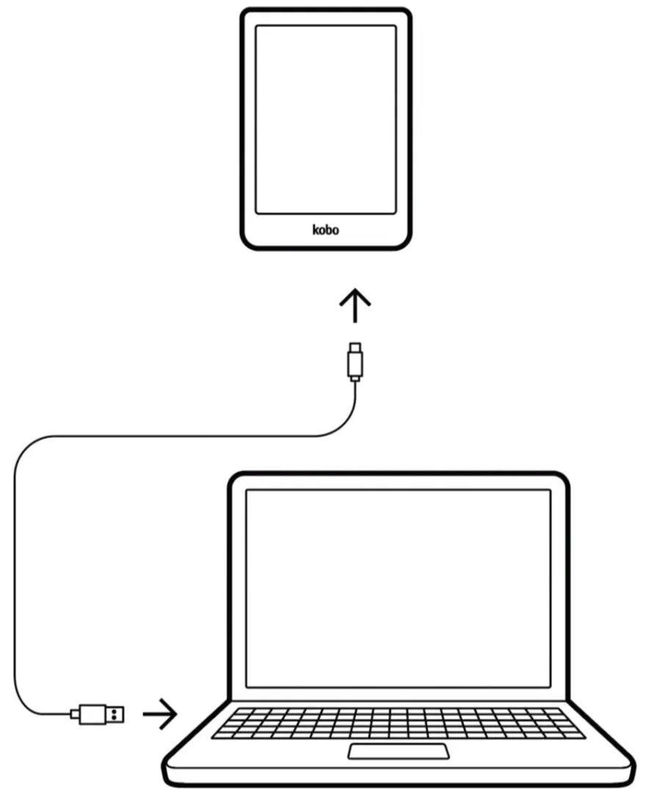

الدليل الشامل لتثبيت KOReader على أجهزة القارئ الإلكتروني Kobo بخطوات واضحة ومباشرة.
اتبع الخطوات التالية بدقة لتثبيت KOReader على جهاز Kobo الخاص بك.
يجب عليك تنزيل ملف KOReader المناسب لجهازك. اختر أحدث إصدار من الرابط أدناه.
تحميل KOReader
تأكد من اختيار الإصدار المطابق لطراز جهازك (Kobo Libra, Clara, Forma ...).
قم بتوصيل قارئ Kobo بالكمبيوتر باستخدام كابل USB واسمح بمشاركة الملفات.

اختر نظام التشغيل الخاص بك
ويندوز:
1. حمّل ملف التثبيت الإضافي (install.ps1).
تحميل ملف التثبيت لويندوز2. ضع ملف KOReader وملف التثبيت في نفس المجلد، ثم انقر بزر الفأرة الأيمن على ملف التثبيت واختر "Run with PowerShell".
3. اختر الرقم 0 واضغط Enter. انتظر حتى يكتمل التثبيت.
لينكس:
1. حمّل ملف التثبيت (install.sh).
تحميل ملف التثبيت للينكس2. ضع ملف KOReader وملف التثبيت في نفس المجلد، ثم انقر بزر الفأرة الأيمن واختر "تشغيل كبرنامج".
3. اختر الرقم 0 واضغط Enter. انتظر حتى يكتمل التثبيت.
بعد اكتمال التثبيت، افصل جهاز Kobo من USB وأعد تشغيله. ستظهر أيقونة NickelMenu في الزاوية اليمنى السفلى.
اضغط على NickelMenu ثم اختر KOReader. 🎉 تهانينا! تم تثبيت KOReader بنجاح.
شاهد الفيديو التفصيلي لمعرفة كل خطوة على حدة.